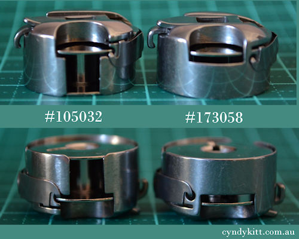
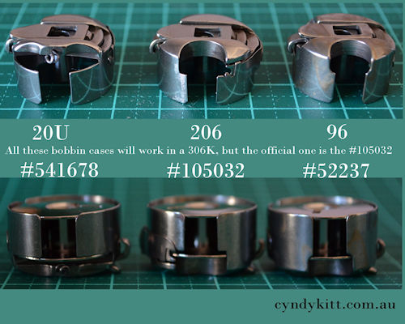
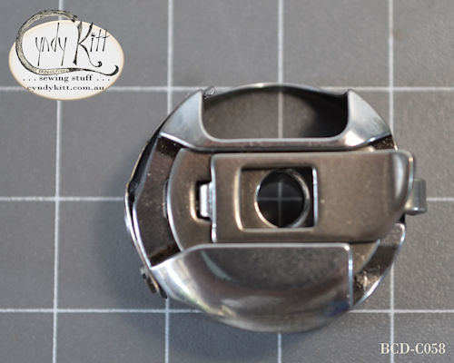
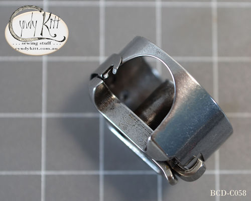
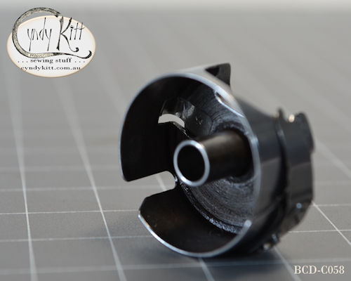
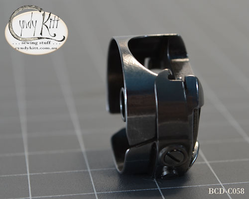
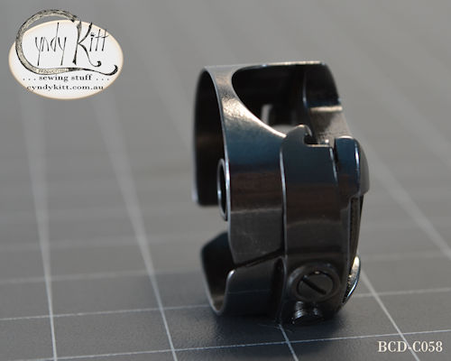

The Singer 206 family of machines inspire both love and hate with lovers of vintage machines.
I hope this information page will be illuminating rather than confusing.

To the best of my investigations the original 206 was originally developed by the Singer factory in Wittenberge, Prussia (Germany) in the 1920s, as was the 201 class and the 15D88 (later to be 15-88 and 15K88).
There is very little known about the Wittenberge design team, but as the 206D, 201D and 15D88 were all in production five to ten years before they were manufactured in the US or Great Britain, reason suggests they are German designs.
Back to the 206 family of machines, although the original 206D and early 206K used regular point domestic needles, Singer developed 206×13 class needles which are essentially a 15×1 (also referred or as HA×1, 705 and 130 class) needles with a shorter point. To the best of my knowledge Schmetz are the only needle manufacturer still producing 206×13 needles and the range is limited to two sizes and with a few exceptions only available online.
There is fierce debate in the VSM world about using 15×1 needles, but after much experimentation I feel as long as you are aware of the potential danger of needle strike, take extra care not to cause needle any deflection, even with the original case you should be okay, but using one of the cases I supply will make it safer.


Regardless of the bobbin case, all 206/306/319/320 models use the #55623S bobbin.


In other bad news, if your machine does require a #105032 case, my supplier has informed me that they are no longer in production, I tested the #541678 20U case, and it does seem to be safe to use with 15×1 class needles.
Physically these three bobbin cases are interchangeable, but the #541678 case was designed to be used in the Singer 20U, the #105032 in the 206K and 306K and the #52237 for the 96 class, and most straight stitch industrials (rotary hook for garment sewing).


Comparison photo of a vintage #173058 (A) and new Taiwanese made #173058 (B&C). 90% of the time you should not have an issue using regular needles with the original case, but you can just see some needle damage on the top of bobbin case "A".


Bobbin Case for Singer 319K (Improved version)
Part No. 173058
Suits Singer 206W, 306M, 306W, most 319K sub models and 320K class machines



 


The 173058 case I stock features the modification many old sewing machine guys did to the original case to allow 15×1 class needles to be used rather than the harder to obtain 206×13.

My Singer 306K (converted to treadle)

My Singer 319K (converted to treadle)